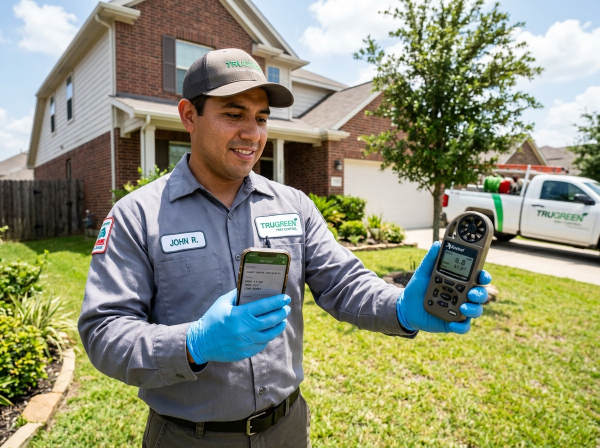

Texas Pesticide Spray Logging & TDA Compliance Features
Purpose-built compliance sidecar for licensed Texas pest control fleets in Austin, Dallas, and Houston.
Auto-Weather Fetch
Never look up wind speed or guess temperatures again. Our system uses your device's GPS and integrates directly with NOAA meteorological stations to automatically record real-time temperature, wind speed, and wind direction the moment you log a spray.

Pre-Loaded EPA Chemical Database
We've pre-loaded over 40 of the most common chemicals used by Texas operators - including Termidor, Bifen, and Taurus - complete with their EPA registration numbers and active ingredients. Just pick from a dropdown and avoid costly audit citation errors.

1-Click TDA Audit PDF
When the Texas Department of Agriculture inspector calls, you'll be ready. Generate certified Form Q527 format PDFs with a single click. Download, print, or email compliant records directly to state auditors in seconds.

25-Second Rapid Logging
We designed our mobile interface specifically for field technicians. With auto-weather, customer address pre-fills, and instant chemical dropdowns, technicians finish their mandatory compliance log in under 25 seconds per residential or commercial stop.

Offline Field Mode
Servicing rural ranches or hill-country basements with zero cellular signal? No problem. Log your sprays completely offline. The app securely stores records locally and automatically syncs to the cloud the moment your truck catches signal.

The Compliance Sidecar
SprayComply is built to work alongside your existing software stack. Keep your Jobber, QuickBooks, GorillaDesk, or Google Calendar. We handle the 25-second regulatory compliance layer without forcing a painful whole-company migration.